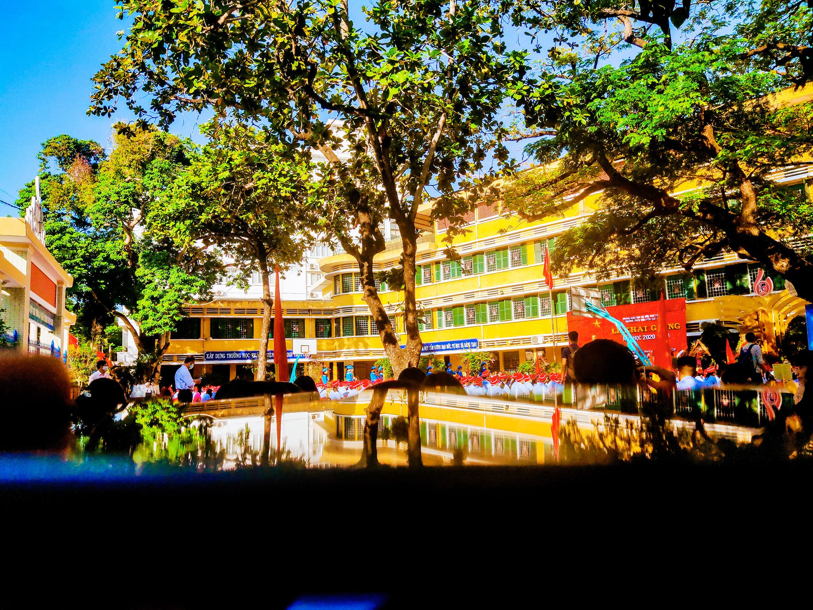

Miyatake Elementary School
153 Miyatakemachi, Nomi, Ishikawa 923-1205, japan
Miyatake elementary school is a school in Ishikawa. Miyatake elementary school is situated nearby to Miyatake Post Office and the Buddhist temple 正林寺..
Nguyen Chi Dieu Secondary School
Địa chỉ: 11 Đống Đa, Phú Nhuận, Thành phố Huế, Thừa Thiên Huế
Trường THCS Nguyễn Chí Diểu được thành lập năm 1979, trên cơ sở kế thừa truyền thống của trường Trung học kháng chiến Nguyễn Chí Diểu- ngôi trường đầu tiên của chính quyền Cách mạng- được thành lập vào năm 1949, theo Quyết định của Ủy ban kháng chiến hành chính Tỉnh Thừa Thiên. Hiện nay trường thuộc loại trường hạng I. .

HUSC High School for the Gifted
38 Đống Đa, Huế, Thừa Thiên Huế, Việt Nam
- Hiện nay, trường Trường THPT chuyên Khoa học Huế nằm ở dãy nhà K trường Đại học Khoa học Huế. Ngoài ra, trường còn dùng các tòa nhà khác, hệ thống thông tin, thư viện, máy tính, đồ thực hành, máy móc, trang thiết bị kỹ thuật như các sinh viên đại học của Đại học Khoa học.